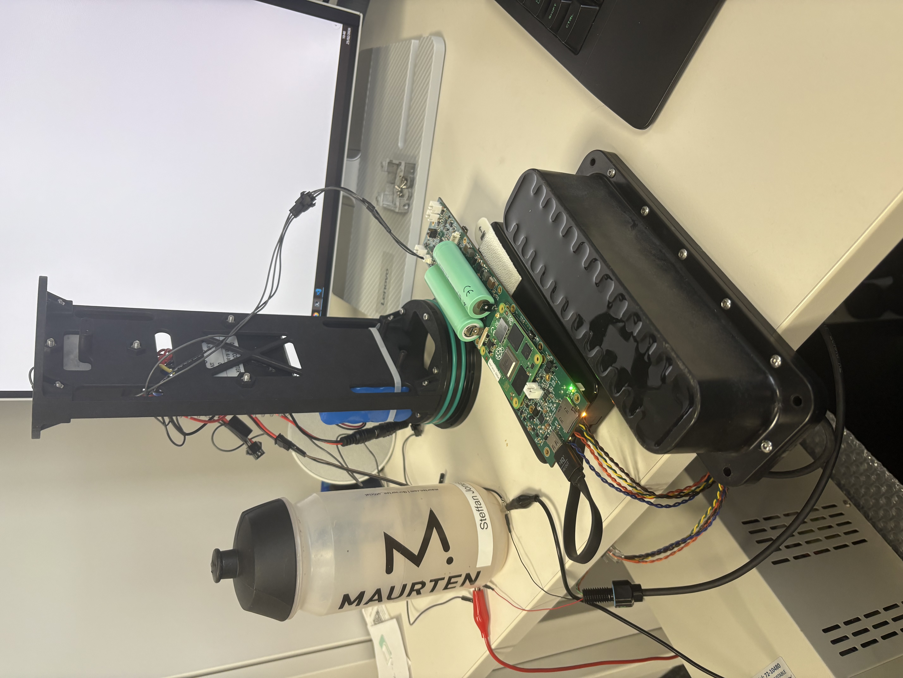
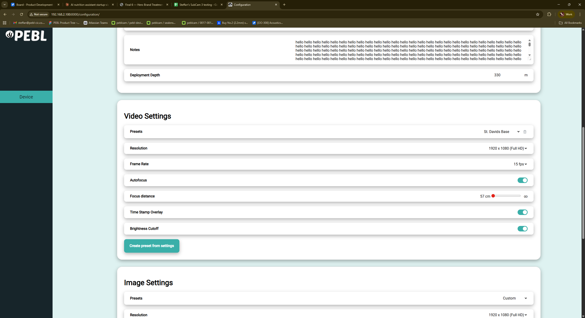
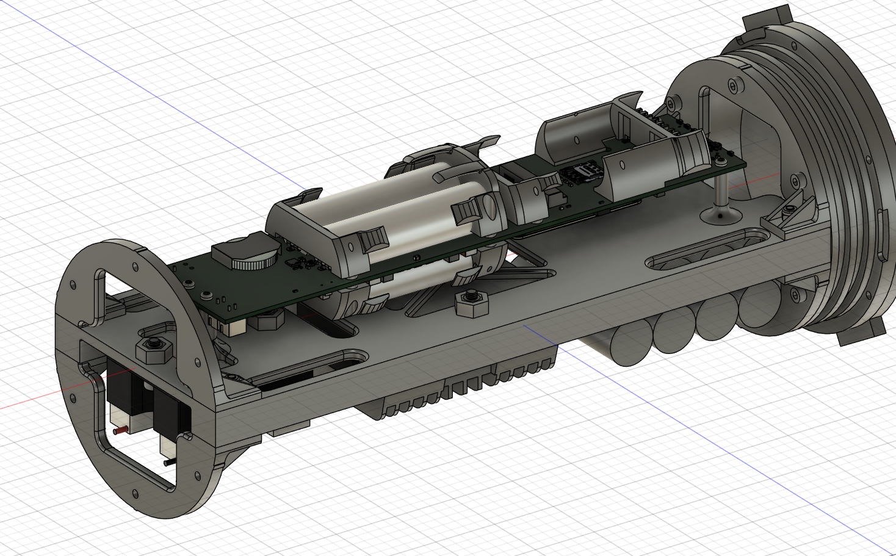
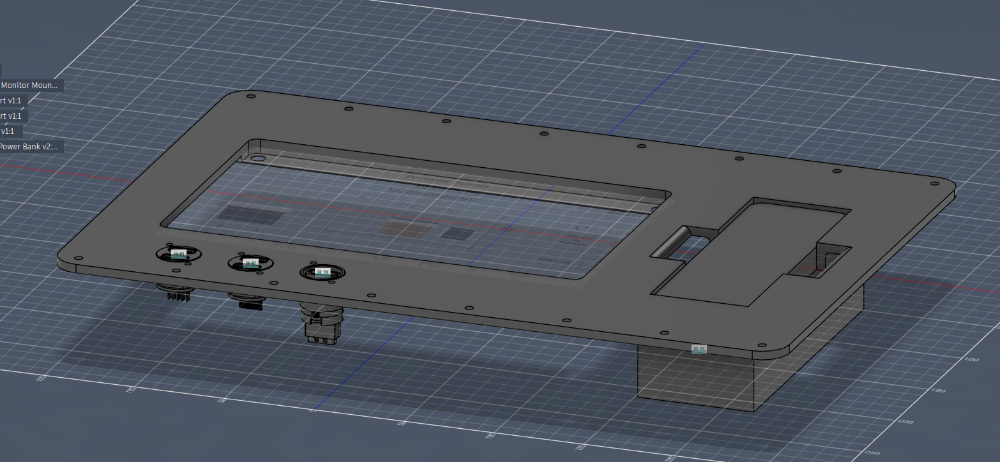
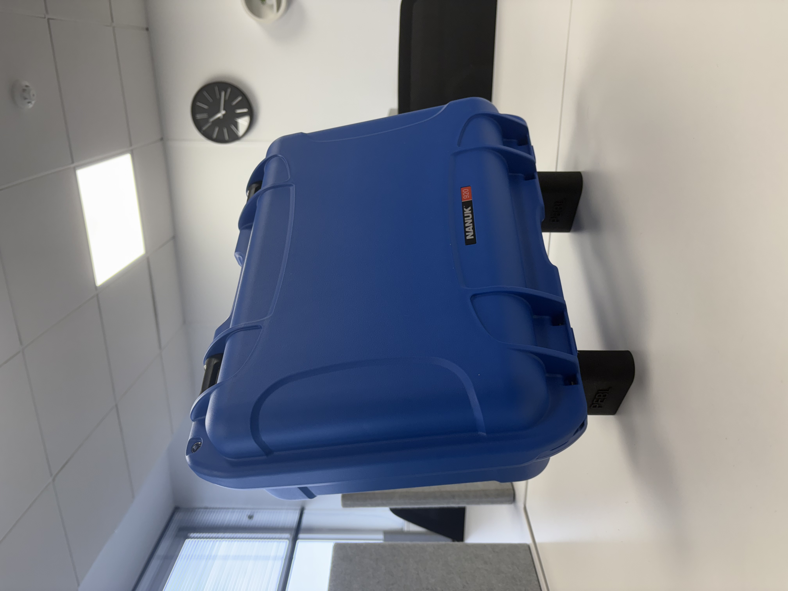
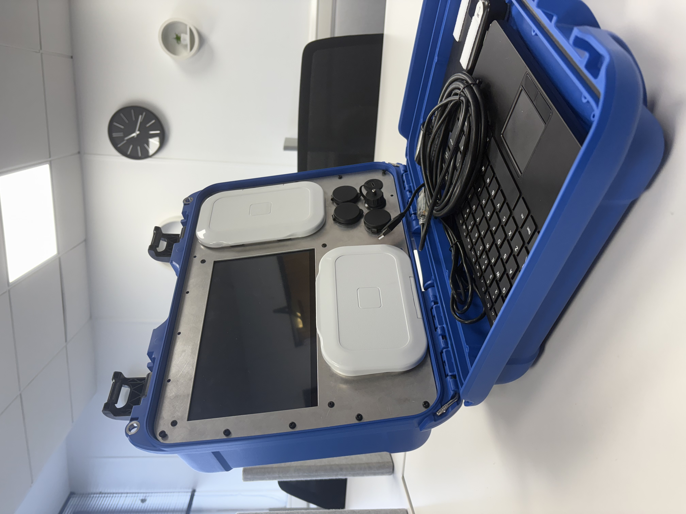
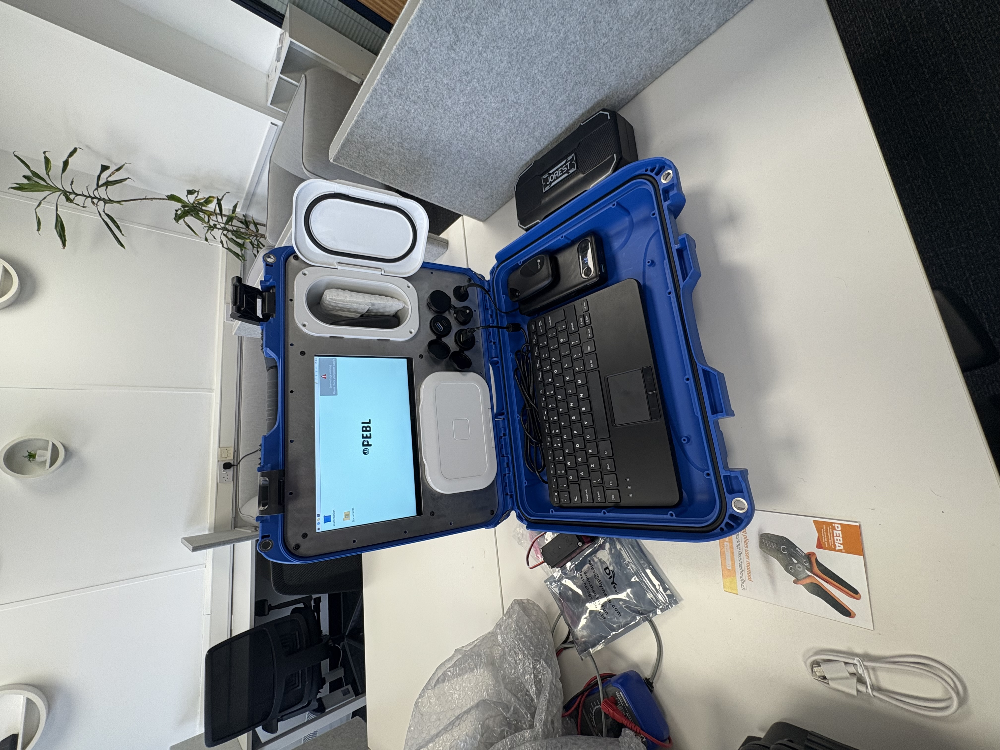

← Back to portfolio
Completed contract
PEBL-CIC
Product Design Engineer / Software Engineering — firmware, embedded systems, and IoT for environmental monitoring devices deployed in agricultural and coastal settings.

Product Design Engineer / Software Engineering — firmware, embedded systems, and IoT for environmental monitoring devices deployed in agricultural and coastal settings.
Product Design Engineer and Software Engineering role at PEBL CIC, a social enterprise developing technology for agricultural and environmental monitoring. Based in Swansea, Wales. The role focused on firmware and software development in preparation for product launch in 2026, working on the GrowProbe and SubCam systems.
Designed and built the front end of the PEBL app — the primary interface through which farmers and coastal operators view and interact with data. Prioritised clarity and simplicity for non-technical field users accessing outdoors on variable data connections.
Engineered device compatibility with 4G wireless networks, enabling automatic data upload from remotely deployed sensors without physical retrieval. Wrote connection management code to handle patchy rural and coastal coverage, with reliable on-device buffering and transmission once connectivity returned.
Wrote Arduino firmware to control a motor-driven sonar scanning system on the SubCam. The firmware manages motor rotation through a defined angular sweep, triggering sonar readings at each step and logging them alongside heading angle — building a radial scan of the underwater environment. Handles motor control, sonar timing, data formatting, and local storage within embedded microcontroller constraints.
Integrating electronics into field-deployable products required attention to waterproofing, connector selection, cable management, and thermal behaviour within compact housings. Mechanical design changes driven by real deployment feedback: connector ingress, cable strain, assembly issues in the field.
Gallery








